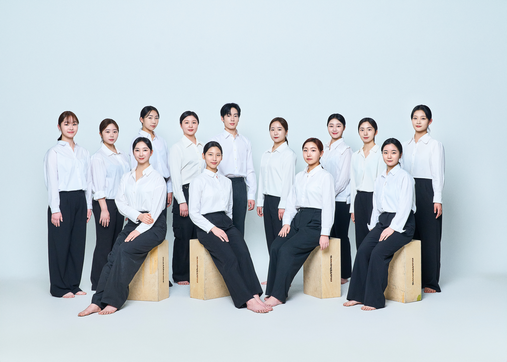

PERFORMANCE
한국무용Korean Dance
벽사 정재만류 승무 재구성
작품내용
벽사 정재만류 승무는 국가무형유산 제27호로 벽사 한성준-한영숙-정재만으로 전해지며 한국 춤사위를 총 집대성해놓은 춤이다.
본공연에서는 천.지.인 삼재사상이 내재된 춤으로 재구성하였다.
음악 | 벽사 정재만류 <승무> 장단
출연 | 김민재, 박서연, 박소윤, 변가령, 서예원, 서원정, 윤재경, 이현민, 정혜진, 정희윤, 허채연, 현윤, 황세연
